AgileX PiPER
로봇팔
안전 수칙과 사양, 전기 인터페이스와 표시등, 원점 · 특이 자세 · 영점, 기계 설치, CAN 연결과 첫 전원 투입, 드래그 티칭, 호스트 소프트웨어 ArmRobotUA, 유지 보수와 치수 도면까지 AgileX 공식 사용 설명서를 한국어로 옮겼습니다.
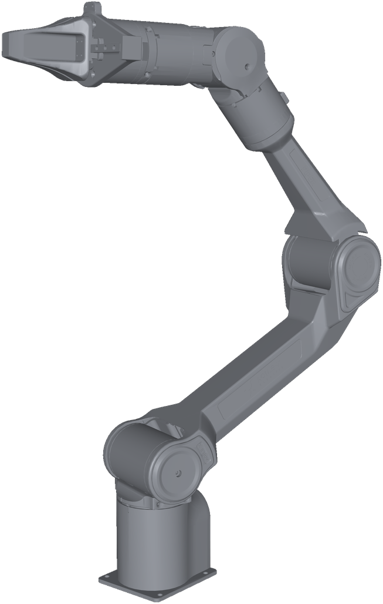
이 설명서에 대하여
| 로봇 | AgileX PiPER 6자유도 로봇팔 (2-Finger 그리퍼 · 티칭 그리퍼 선택) |
| 근거 문서 | AgileX PIPER Product User Manual (EN) V1.0 2025.06 (agilexsupport.yuque.com, 2026-08-25 판) |
| 함께 보는 책 | AgileX PiPER 사용 가이드 (ArmRobotUA 따라 하기 · 텔레오퍼레이션 · 영점 학습 · Python SDK · ROS · MoveIt2) |
| 판 | 한국어판 · 2026.11.17 |
| 문의 | go.support@wego-robotics.com |
본문은 AgileX 공식 사용 설명서를 옮긴 것이며, 장 순서는 WeGo 설명서 형식에 맞췄습니다 (안전 수칙을 2장으로). 펌웨어와 ArmRobotUA 버전에 따라 화면과 기능이 달라질 수 있습니다.
© WeGo Robotics. AgileX, PiPER는 AgileX Robotics의 상표입니다. 표지의 PiPER 이미지는 AgileX가 공개한 URDF 메시로 렌더링한 것이고, 본문 그림은 AgileX 사용 설명서의 그림입니다.
목차
- 01소개와 사양
- 02중요 안전 수칙
- 03전기 인터페이스
- 04좌표계 · 특이 자세 · 영점
- 05작업 공간과 설치
- 06CAN 연결과 전원 투입
- 07드래그 티칭
- 08호스트 소프트웨어 ArmRobotUA
- 092차 개발과 CAN 프로토콜
- 10유지 보수와 비상 대응
- 부록치수 도면
소개와 사양
PiPER는 교육 · 연구, 소비자용 응용, 산업 자동화를 위해 설계된 6자유도 로봇팔입니다. 가반 하중은 1.5 kg이며, 휴머노이드 로봇 · 자동 조립 · 자동 운반 같은 연구와 산업 응용에 알맞습니다. 문서
회전 관절 여섯 개로 폭넓고 유연하게 움직이며, 정밀도와 반복성이 높습니다. 모듈식 설계로 정비와 업그레이드가 쉽고, 직관적인 사용자 화면으로 전문가가 아니어도 빠르게 시작할 수 있습니다. 과학 연구 · 교육 · 자동차 제조 · 전자 조립 · 식품 가공 · 실험실 자동화 · 의료 장비 조작 같은 분야에 널리 쓸 수 있습니다.
구성품 문서
| 이름 | 수량 |
|---|---|
| 6자유도 로봇팔 | 1 |
| USB-to-CAN 모듈 | 1 |
| 전원 어댑터 | 1 |
| 마이크로 USB 케이블 | 1 |
| 전원 · 통신 케이블 | 1 |
| 베이스 고정 나사 | 4 |
| 베이스 고정 렌치 | 1 |
성능 사양 문서
| 항목 | 사양 |
|---|---|
| 자유도 | 6 |
| 가반 하중 | 1.5 kg |
| 무게 | 4.2 kg |
| 반복 정밀도 | ±0.1 mm |
| 작업 반경 | 626.75 mm |
| 정격 전압 | DC 24 V (최소 동작 전압 24 V, 최대 26 V) |
| 소비 전력 | 최대 ≤ 120 W · 평균 ≤ 40 W |
| 재질 | 알루미늄 합금 프레임 · 플라스틱 외장 |
| 컨트롤러 | 내장형 |
| 통신 방식 | CAN |
| 제어 방식 | 드래그 티칭 · 오프라인 궤적 · API · 호스트 소프트웨어 |
| 외부 인터페이스 | 전원 × 1 · CAN × 1 |
| 베이스 고정 치수 | 70 mm × 70 mm · M5 × 4 |
| 작동 환경 | 온도 −20 ~ 50 °C · 습도 25 ~ 85 % (결로 없음) |
| 소음 | < 60 dB |
| 설치 | AgileX 전 제품과 호환 |
| 관절 동작 범위 | J1 ±154° · J2 0° ~ 195° · J3 −175° ~ 0° · J4 −102° ~ 102° · J5 −75° ~ 75° · J6 ±120° |
| 관절 최대 속도 | J1 180°/s · J2 195°/s · J3 180°/s · J4 · J5 · J6 225°/s |
위 값은 AgileX가 정해진 시험 환경에서 측정한 결과입니다. 환경과 사용 방법에 따라 달라질 수 있습니다.
그리퍼 사양 (선택) 문서
| 항목 | 2-Finger 그리퍼 | 티칭 그리퍼 |
|---|---|---|
| 무게 | 500 g | 550 g |
| 정밀도 | ±0.5 mm | ±0.5 mm |
| 열림 · 닫힘 거리 | 0 ~ 100 mm | 0 ~ 100 mm |
| 전원 전압 | DC 24 V | DC 24 V |
| 소비 전력 | 최대 ≤ 50 W · 종합 ≤ 30 W | 최대 < 50 W · 종합 < 30 W |
| 접촉면 재질 | 고무 | 고무 |
| 컨트롤러 | 내장형 | 내장형 |
| 통신 방식 | CAN | CAN |
| 제어 방식 | 드래그 티칭 · 오프라인 궤적 · API · 호스트 소프트웨어 | |
| 외부 인터페이스 | 전원 × 1 · CAN × 1 | |
| 설치 방식 | 플랜지 설치 | |
| 작동 환경 | 온도 −20 ~ 50 °C · 습도 25 ~ 85 % (결로 없음) | |
| 소음 | < 60 dB | |
Modified DH 파라미터 문서
| Link | d | a | α | θ offset |
|---|---|---|---|---|
| 1 | 123 | 0 | 0 | 0 |
| 2 | 0.0 | 0.0 | −π/2 | −172.22/180 · π |
| 3 | 0.0 | 285.03 | 0 | −102.78/180 · π |
| 4 | 250.75 | −21.98 | π/2 | 0 |
| 5 | 0 | 0 | −π/2 | 0 |
| 6 | 91 | 0.0 | π/2 | 0 |
중요 안전 수칙
장치를 처음 쓰기 전에 반드시 읽고 이해해야 하는 안전 정보입니다. 이 설명서의 조립 지침을 모두 따르고, 경고 표시가 붙은 글에 특히 주의하십시오. 문서
⚠ 표시는 피하지 않으면 사람이 다치거나 장비가 심각하게 손상될 수 있는 위험한 상황을 뜻합니다.
로봇팔이 손상 · 변경 · 개조되었으면 AgileX는 책임지지 않습니다. 프로그램 오류나 로봇팔 오작동으로 로봇팔이나 다른 장비에 생긴 손해에도 책임지지 않습니다.
새 펌웨어에서는 메인 컨트롤러에 MIT 처리가 적용되어 있습니다. MIT 모드(티칭 모드)를 쓴 뒤 호스트 제어 모드로 바꾸려면 다음 순서를 따르십시오.
- 로봇팔을 손으로 영점에 되돌리고, 티칭 버튼을 짧게 눌러 끕니다.
- 호스트 소프트웨어에 연결해 Disable한 뒤 다시 Enable합니다.
영점이 아닌 자세에서는 절대 모드를 바꾸지 마십시오. Disable되면서 팔이 갑자기 떨어지거나 비정상적으로 움직일 수 있습니다.
책임의 한계
이 설명서의 안전 정보는 AgileX 로봇팔의 보증이 아닙니다. 모든 안전 지침을 지켜도 로봇팔이 부상이나 손상을 일으킬 수 있습니다.
이 설명서는 로봇팔 응용 시스템 전체의 설계 · 설치 · 운용이나, 시스템 안전에 영향을 줄 수 있는 모든 주변 장비를 다루지 않습니다. 전체 시스템의 설계와 사용은 로봇팔을 설치하는 나라의 표준과 규정이 정한 안전 요구 사항을 따라야 합니다. 통합 업체와 최종 고객은 관련 규정과 법을 지켜 로봇팔 응용 시스템 전체에 중대한 위험이 없도록 할 책임이 있습니다. 이 책임에는 다음 항목이 포함되며, 이에 한정되지 않습니다.
유효성과 책임
- 로봇팔 시스템 전체의 위험성 평가를 합니다.
- 위험성 평가에서 정한 다른 기계용 안전장치를 연결합니다.
- 소프트웨어와 하드웨어를 포함한 로봇팔 시스템 전체의 설계 · 설치가 정확한지 확인합니다.
- 관련 규정과 법에 따라 안전성 평가를 하여, 개발한 로봇팔이 실제 응용에서 중대한 위험이 없도록 합니다.
- 장비를 조작하기 전에 잠재적인 안전 위험을 알아 둡니다.
- 사용자가 어떤 안전 조치도 바꾸지 않게 합니다.
- 위험성 평가서와 이 설명서를 포함한 모든 문서를 기술 파일로 모아 둡니다.
환경
- 처음 쓰기 전에 이 설명서를 읽고 기본 조작과 사용 지침을 이해하십시오.
- 비교적 트인 곳에서 쓰십시오. 로봇팔에는 자동 장애물 회피 센서가 없습니다.
- 주위 온도가 −20 ~ 50 °C인 곳에서 쓰십시오.
- 방진 · 방수 등급은 별도 주문이 아니면 IP22입니다.
점검
- 로봇팔에 눈에 띄는 이상이 없는지 확인하십시오.
- 쓰는 동안 배선이 제대로 연결되어 있는지 확인하십시오.
조작
- 작동 중에는 주변 공간을 넉넉히 비워 두십시오.
- 로봇팔이 보이는 곳에서 조작하십시오.
- 최대 가반 하중은 1.5 kg입니다. 하중이 1.5 kg을 넘지 않게 하십시오.
- 장비에 이상이 생기면 2차 손상을 막기 위해 즉시 사용을 멈추십시오.
- 이상이 생기면 기술 담당자에게 연락하고, 직접 고치지 마십시오.
- IP 등급에 맞는 환경에서 쓰십시오.
경고 ⚠
- 로봇팔과 공구 · 엔드 이펙터가 언제나 바르게, 단단히 고정되어 있어야 합니다.
- 로봇팔 작업 공간에 들어가야 할 때는 보안경을 착용하십시오.
- 로봇팔이 자유롭게 움직일 공간을 확보하십시오.
- 위험성 평가에서 정한 안전 조치를 갖추십시오.
- 헐렁한 옷을 입고 조작하지 말고, 긴 머리는 묶으십시오.
- 손상되었거나 이상이 있는 로봇팔은 쓰지 마십시오.
- 호스트 소프트웨어에 오류 메시지가 뜨면 즉시 비상 정지하고 기술 담당자에게 연락하십시오.
- 작동 중에는 머리 · 얼굴 등 몸을 로봇팔과 로봇팔이 닿는 범위에서 멀리 두십시오.
- 로봇팔을 절대 개조하지 마십시오. 개조는 예측할 수 없는 위험을 만듭니다.
- 로봇팔을 영구 자기장에 두지 마십시오. 강한 자기장은 로봇팔을 손상시킬 수 있습니다.
- 로봇팔은 작동 중 열이 납니다. 작동 중이나 멈춘 직후에는 만지지 마십시오. 전원을 끄고 한 시간 동안 식히십시오.
- 여러 기계를 함께 연결하면 위험이 커지거나 새로 생길 수 있습니다. 설치 전체의 위험성 평가를 하십시오. 서로 다른 안전 · 비상 정지 성능 수준이 필요하면 언제나 가장 높은 수준을 고르십시오. 설치에 쓰는 모든 장비의 설명서를 읽고 이해하십시오.
- 로봇팔은 만 18세 미만이거나 완전한 행위 능력이 없는 사람이 쓰기에 적합하지 않습니다.
전기 인터페이스
PiPER는 6자유도 로봇팔이며, 끝단 가반 하중은 1.5 kg입니다. 경량 설계로 비교적 높은 가반 하중을 유지하면서도 빠르게 움직이며, 체화 지능 연구에서 실제 환경 데이터를 모으는 데 널리 쓸 수 있습니다. 문서
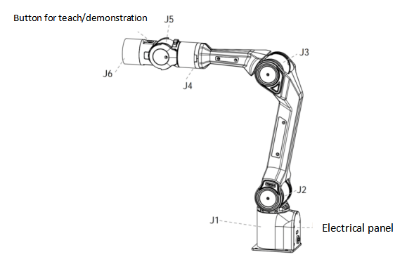
전기 패널 문서
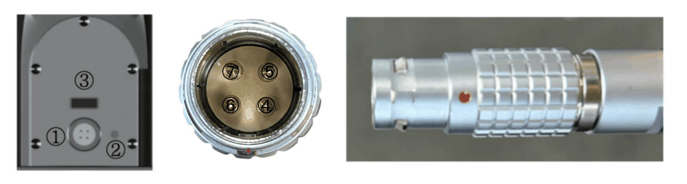
| 번호 | 이름 | 번호 | 이름 |
|---|---|---|---|
| 1 | 전원 · 통신 포트 | 4 | 전원 + |
| 2 | 상태 표시등 | 5 | 전원 − |
| 3 | J1 · J2 연결 포트 | 6 | CAN-H |
| 7 | CAN-L |
빨간 점을 케이블의 빨간 점에 맞춥니다. 커넥터에서 무늬가 있는 부분은 힘을 주면 뒤로 밀립니다. 끼울 때는 빨간 점이 아래를 향하게 해 튀어나온 점에 맞춘 뒤 곧게 밀어 넣고, 뺄 때는 무늬가 있는 부분을 누른 채 당깁니다.
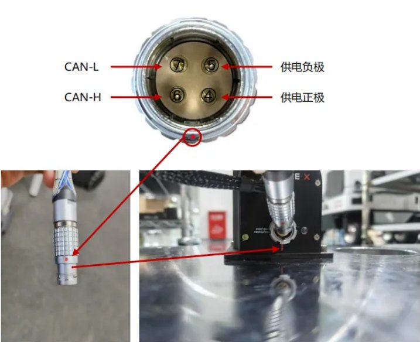
전기 패널 상태 표시등 (2번)
| 표시등 | 상태 |
|---|---|
| 녹색 깜박임 | 로봇팔이 정상 작동 중입니다. |
| 녹색 켜짐 | 메인 컨트롤러에 전원이 정상적으로 들어가지 않았습니다. 다시 꽂으십시오. |
| 빨간색 깜박임 | 로봇팔이 비정상이거나 업그레이드 모드에 들어간 상태입니다. 업그레이드 모드가 아니면 고장을 점검해야 합니다. |
끝 관절 티칭 표시등
| 표시등 | 상태 |
|---|---|
| 꺼짐 | 드래그 티칭이 멈췄거나 드래그 기록이 끝난 상태 |
| 녹색 켜짐 | 드래그 티칭 궤적을 기록하는 상태 |
| 녹색 깜박임 | 드래그 티칭 궤적을 재생하는 상태 |
끝 관절 예비 인터페이스 문서
전원 인터페이스는 위가 +, 아래가 −이고, 통신 인터페이스는 왼쪽이 H, 오른쪽이 L입니다.
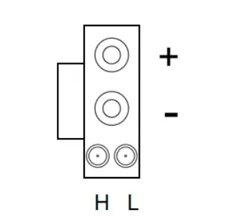
메인 컨트롤러 CAN 종단 저항 스위치 문서
메인 컨트롤러의 CAN 종단 저항 스위치는 주로 리더 팔 하나가 팔로워 팔 여러 대를 제어할 때 씁니다. 팔 하나만 쓸 때는 바꿀 필요가 없습니다.
- 공장 기본값은 1번 ON(아래), 2번 OFF(위)이며, 이때 저항은 60 Ω입니다.
- 팔이 두 대를 넘으면 한 팔만 1번 ON(아래) · 2번 OFF(위)로 두고, 나머지 팔은 1 · 2번 모두 OFF(위)로 둡니다.
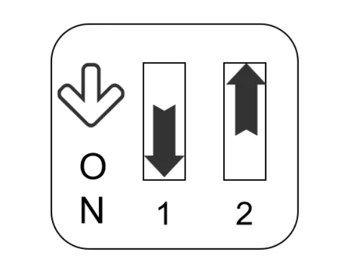
좌표계 · 특이 자세 · 영점
원점과 사용자 좌표계, 피해야 할 특이 자세, 관절 영점의 위치를 설명합니다. 문서
원점
PiPER 원점 좌표계의 (x 0, y 0, z 0) 위치는 아래 그림과 같습니다.
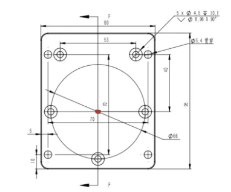
사용자 좌표계
사용자 좌표계는 로봇팔 베이스 좌표계입니다.
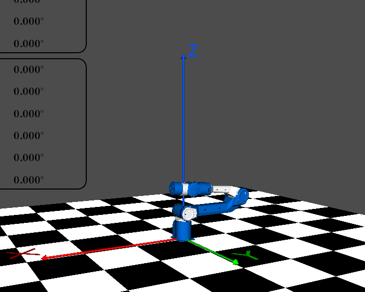
특이 자세
- 손목 특이 자세: J4와 J6이 같은 축에 있을 때
- 팔꿈치 특이 자세: J1과 J4가 같은 축에 있을 때
- 어깨 특이 자세: J5와 J6 축의 교점이 J1 축 위에 있을 때
- 경계 특이 자세: 팔 끝이 최대 작업 범위에 있을 때
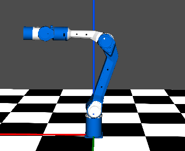
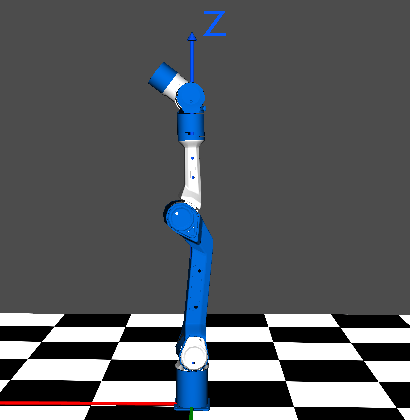
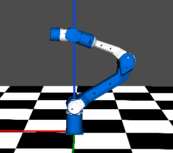
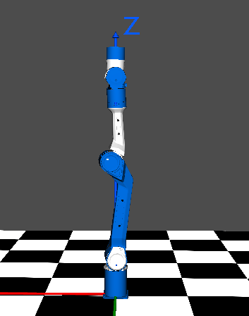
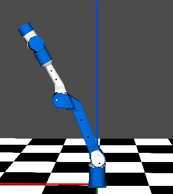
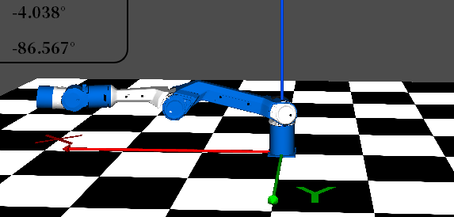
영점
관절의 영점은 그림과 같은 자세입니다. J1은 교정 눈금이 맞은 위치, J2 · J3은 Disable 상태에서 팔이 자연스럽게 놓인 위치, J5는 J6 축이 J4 축과 일직선이 되는 위치가 영점입니다.
영점 좌표: X = 56.128, Y = 0, Z = 213.266, RX = 0, RY = 85.0, RZ = 0
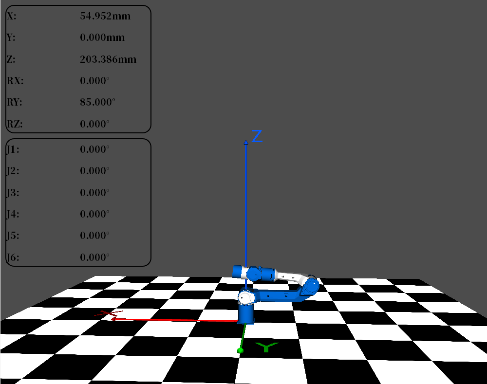
작업 공간과 설치
작업 공간과 끝단 가반 하중 곡선, 베이스 · 끝단 · 책상 설치, 관절 영점 표시, 설치 방식 설정을 설명합니다. 문서
작업 공간과 가반 하중
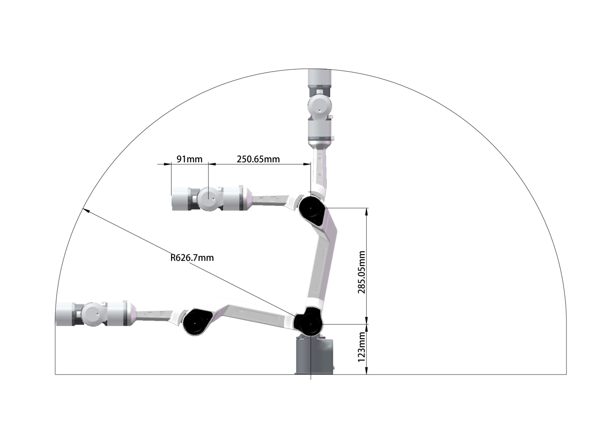
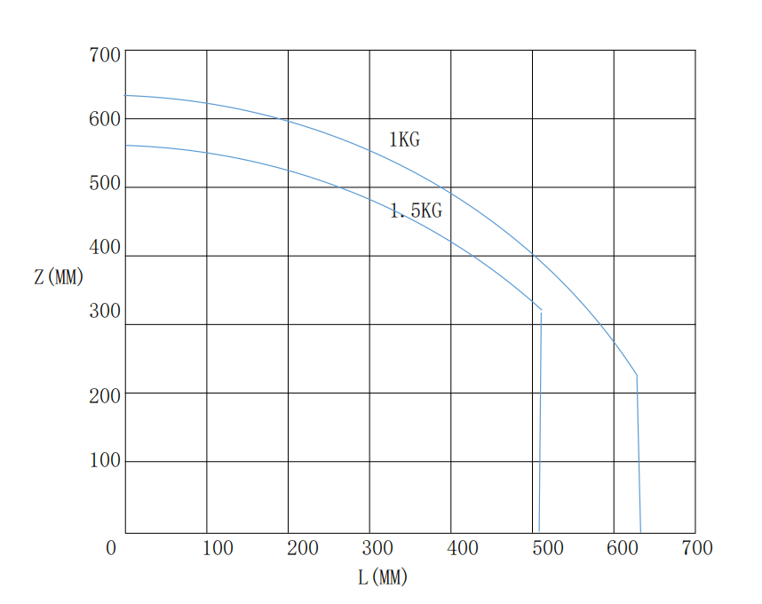
베이스 설치
베이스는 나사로 고정합니다. 베이스에 M5 나사 구멍 네 개가 있고, 부속품에 M5 나사 네 개와 육각 공구가 들어 있습니다. 구멍 간격은 70 mm입니다. 이동 장비나 고정면에 붙일 때는 70 mm 간격으로 구조를 설계하십시오.
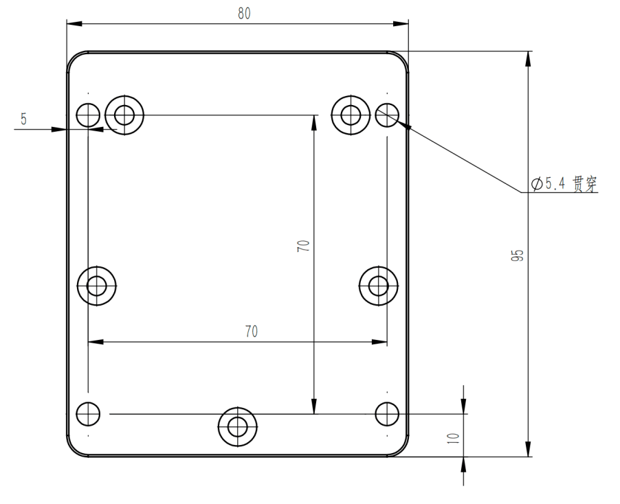
끝단 설치 (그리퍼 · 티칭 그리퍼)
끝단에는 플랜지로 다른 공구를 달 수 있습니다. 선택 부속품으로 2-Finger 그리퍼와 티칭 그리퍼가 있습니다.
- 로봇팔을 설치대에 고정합니다.그리퍼 · 티칭 그리퍼 · 플랜지 부속품(플랜지와 볼트)을 꺼냅니다.
- 제한 볼트를 끼웁니다.J6 모터를 마주 보고 왼쪽 위에 제한 볼트(M3 × 4, 머리 지름 4.5)를 끼웁니다.
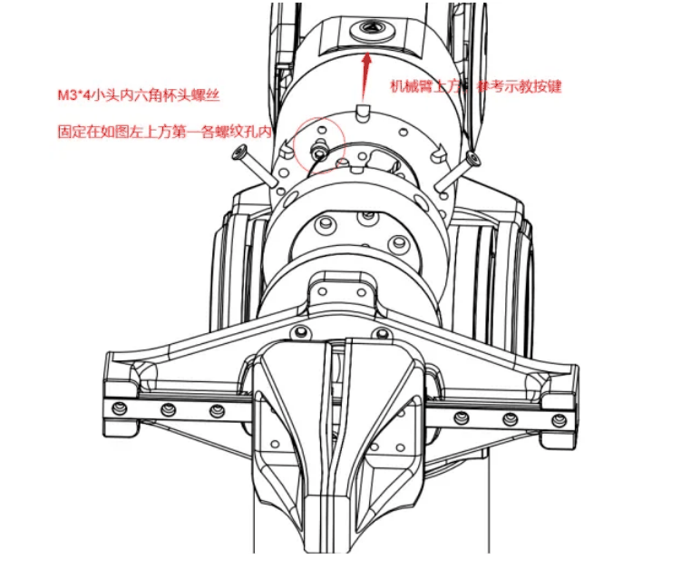
그림 18. J6 제한 볼트 위치 (AgileX 문서) - 플랜지를 고정합니다.플랜지의 제한 홈을 제한 볼트에 맞춘 뒤 M3 × 8 육각 렌치 볼트(접시머리) 6개로 고정합니다.
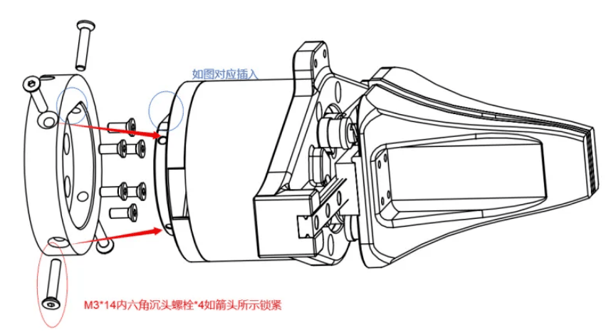
그림 19. 플랜지 고정 (AgileX 문서) - 그리퍼를 끼웁니다.그리퍼와 티칭 그리퍼의 뒤 덮개는 오삽입 방지 구조입니다. 끼운 뒤 M3 × 14 육각 렌치 볼트(접시머리)로 고정합니다.
- 케이블을 연결합니다.부속품의 전원 · 통신 케이블을 J6과 그리퍼에 꽂습니다.
- 전원과 CAN을 연결합니다.항공 케이블을 로봇팔에 연결하고, USB-to-CAN 모듈을 항공 케이블에 연결합니다(노란색 선은 CAN-H, 파란색 선은 CAN-L). USB 케이블로 모듈을 컴퓨터에 연결하고, 항공 케이블과 어댑터를 연결한 뒤 어댑터 전원을 넣습니다.
- J6 영점을 맞춥니다.베이스 표시등이 녹색으로 천천히 깜박이면 호스트 소프트웨어를 실행합니다. 로봇팔과 통신이 되면 그리퍼를 그림의 한계 위치까지 돌린 뒤 J6 관절의 영점을 설정합니다.
설정이 끝나면 로봇팔을 Enable하고 호스트 소프트웨어로 J6을 영점에 돌린 뒤, J6과 그리퍼의 영점 표시가 맞는지 확인합니다.
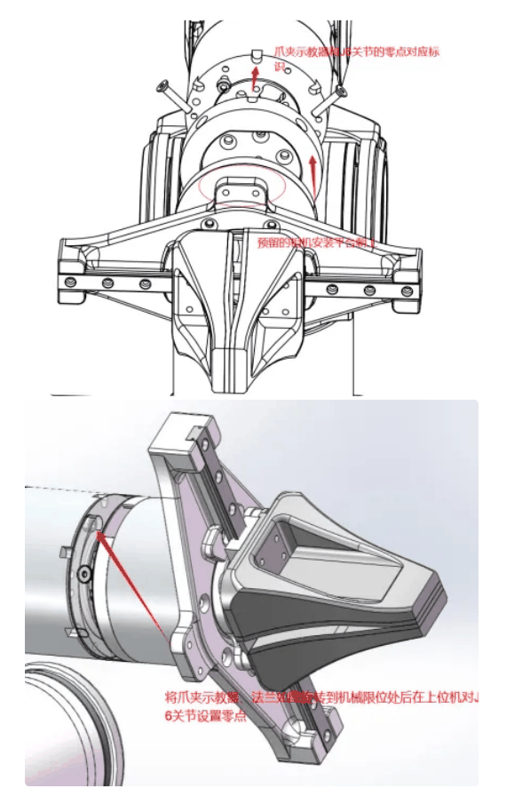
그림 20. J6과 그리퍼의 영점 표시 (AgileX 문서)
책상 설치 모듈
책상 설치 모듈은 기본 구성에 들어 있지 않은 선택 부속품입니다. 따로 구매하려면 문의하십시오. 치수는 아래 그림과 같습니다. 로봇팔을 쓰기 전에 단단히 고정하십시오.
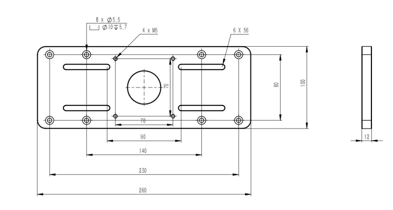
관절 영점 표시
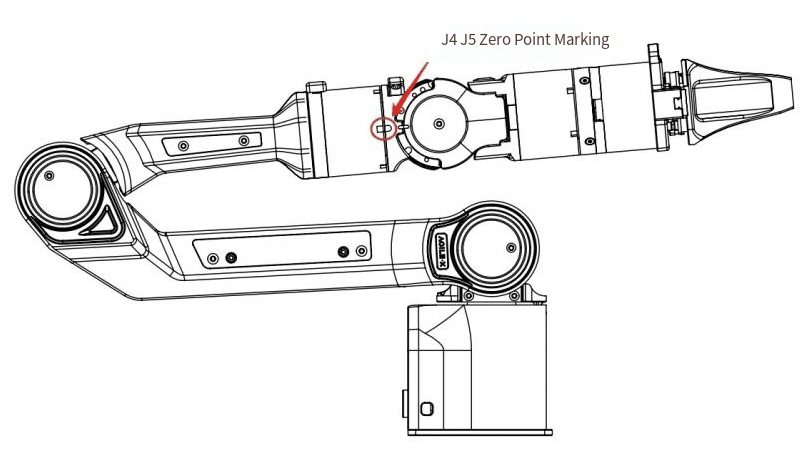
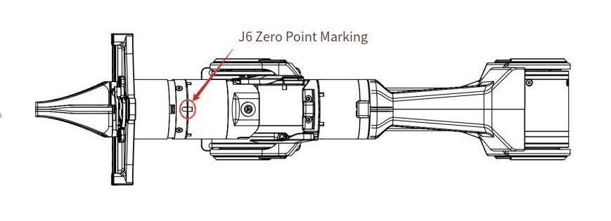
설치 방식 설정
설치 방식에 따라 설정을 바꿔야 합니다. 호스트 소프트웨어의 설정에서 설치 위치에 맞는 설치 방식을 고르십시오.
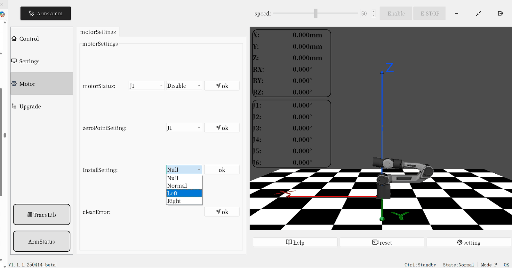
CAN 연결과 전원 투입
CAN 선을 USB-to-CAN 모듈에 연결하고, 순서대로 전원을 넣습니다. 문서
CAN 연결
CAN 케이블을 꺼내 CAN_H와 CAN_L 선을 USB-to-CAN 모듈에 연결하고, 모듈을 노트북의 USB 포트에 꽂습니다.
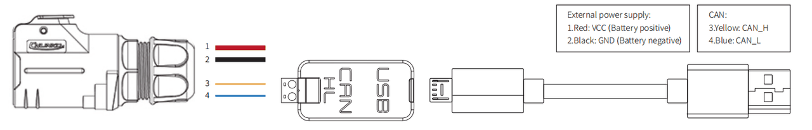
기본 어댑터가 아닌 전원을 쓰면 입력 전압은 26 V를 넘지 않아야 하고 전류는 10 A 이상이어야 합니다.
끝 관절 전기 연결
끝 관절에는 XT30 2+2 인터페이스가 있으며, 전원 · CAN 핀 배치는 아래 그림과 같습니다. 전압 24 V, 최대 전류 2 A입니다.
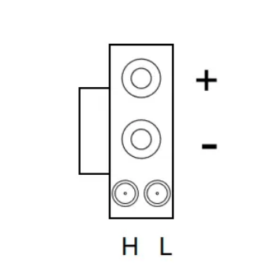
끝 관절 CAN 통신은 AgileX 장비만 지원합니다. 다른 CAN 장치를 허가 없이 연결하면 통제할 수 없는 손상이 생길 수 있으므로 절대 연결하지 마십시오.
처음 전원 넣기
처음 전원을 넣을 때는 A ~ G 순서를 따릅니다.
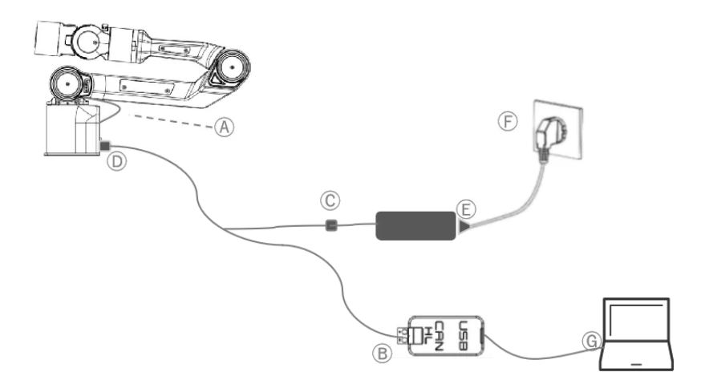
- A의 J2 연결 포트를 먼저 꽂습니다.
- 항공 커넥터 B의 CAN 선을 연결합니다.
- C의 XT30 커넥터를 맞춰 끼웁니다.
- 항공 커넥터 D를 빨간 점이 아래로 가게 끼웁니다.
- 어댑터 E를 연결합니다.
- 전원을 확인합니다.어댑터 E의 AC 플러그가 제대로 꽂혀 전원이 들어오는지 확인하고, 전기 패널 표시등이 녹색으로 깜박일 때까지 기다립니다.
- USB 케이블을 컴퓨터에 꽂습니다.
빨간 점의 방향을 아래 케이블의 빨간 점에 맞춥니다. 무늬가 있는 부분은 힘을 주면 뒤로 밀립니다. 끼울 때는 빨간 점을 튀어나온 점에 맞춰 곧게 밀어 넣고, 뺄 때는 무늬가 있는 부분을 누른 채 당깁니다.
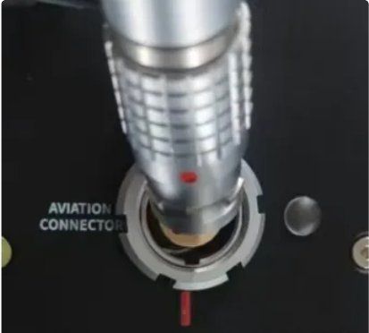
드래그 티칭
드래그 티칭 상태는 J5와 J6 사이의 버튼 표시등으로 알 수 있습니다. 문서
| 표시등 | 상태 |
|---|---|
| 꺼짐 | 드래그 티칭이 멈췄거나 드래그 기록이 끝났습니다. |
| 녹색 켜짐 | 궤적을 기록하는 드래그 티칭 모드입니다. |
| 녹색 깜박임 | 궤적을 재생하는 드래그 티칭 모드입니다. |
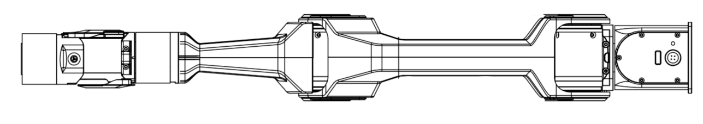
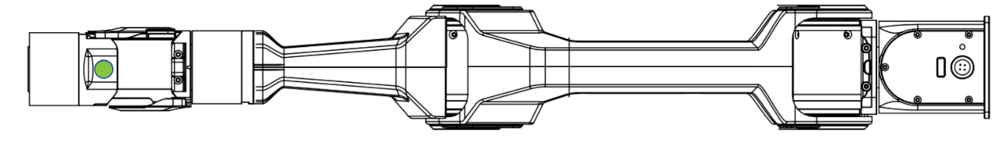
버튼 조작
- 한 번 누르기: 누를 때마다 궤적 기록을 시작하거나 멈춥니다.
- 두 번 누르기: 궤적 재생 모드를 켭니다.
순서
- 표시등이 꺼져 있으면 한 번 누릅니다.녹색이 켜지면 팔을 손으로 끌어 궤적 기록을 시작합니다.
- 기록한 궤적이 있고 표시등이 꺼져 있으면 두 번 누릅니다.녹색이 500 ms마다 깜박이며 기록한 궤적을 재생합니다.
- 표시등이 켜져 있으면 기록 중입니다.한 번 누르면 꺼지며 기록이 끝납니다. 재생하려면 2단계를 따릅니다.
- 표시등이 깜박이면 재생 중입니다.
- 궤적을 재생하는 동안 로봇팔과 안전거리를 지켜 다치지 않게 하십시오.
- 기록 모드에 들어갈 때마다 전에 기록한 궤적은 지워집니다. 재생할 때는 가장 최근에 기록한 궤적을 씁니다.
- 최대 기록 시간은 3분이며, 이를 넘는 궤적은 무효입니다.
- 드래그 티칭을 마치면 표시등이 꺼졌는지(드래그 티칭이 멈췄는지) 확인하십시오.
- 호스트 제어나 명령 제어로 바꾸려면 표시등이 꺼진 상태에서 호스트 소프트웨어로 대기(standby) 모드로 바꾼 뒤 CAN 모드로 바꾸십시오. 명령 제어도 같습니다.
- 링크 모드나 드래그 티칭 모드에서 CAN 제어 모드로 바꿀 때는 반드시 로봇팔을 아래 그림의 영점에 둔 뒤 바꾸십시오.
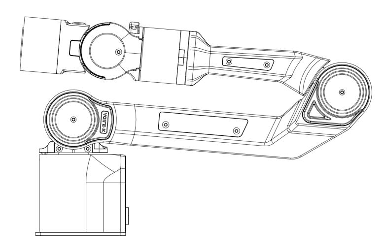
호스트 소프트웨어 ArmRobotUA
ArmRobotUA는 Windows 7 이상에서 쓰는 호스트 소프트웨어입니다. 이 소프트웨어로 로봇팔을 조작하고 피드백 데이터를 읽을 수 있습니다. 처음 따라 하는 순서는 PiPER 사용 가이드 3장을 보십시오. 문서
내려받기: AgileX 사용 설명서의 링크 (Dropbox, ArmRobotUA_V1.6.0.260617_beta-1.exe, 2026-08-25 판 기준)
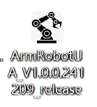
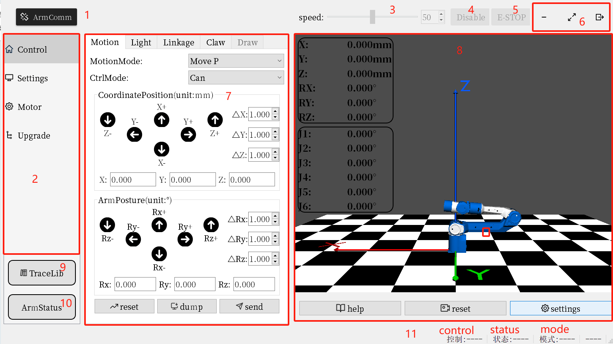
| 번호 | 이름 | 번호 | 이름 |
|---|---|---|---|
| 1 | 로봇팔 통신 버튼 | 7 | 조작 기능 영역 |
| 2 | 메뉴 | 8 | 3D 시뮬레이션 모델 |
| 3 | 속도 비율 설정 | 9 | 궤적 라이브러리 |
| 4 | 로봇팔 Enable 버튼 | 10 | 관절 상태 |
| 5 | 로봇팔 비상 정지 버튼 | 11 | 로봇팔 상태 표시줄 |
| 6 | 창 크기 · 닫기 버튼 |
통신
setting에서 언어를 바꿉니다.
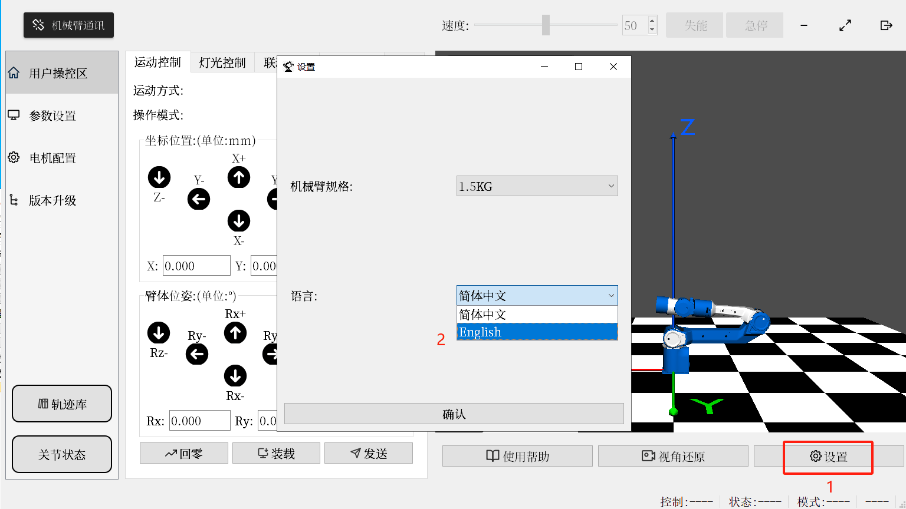
창 왼쪽 위의 통신 버튼을 누르면 [Connect Robot] 창이 뜹니다. 이 창은 PC에 연결된 CAN 장치를 자동으로 찾아 보여 줍니다. 여기서 고른 CAN 장치를 직접 연결하거나 해제할 수 있습니다. 연결되면 버튼에 CAN 장치의 온라인 상태가 실시간으로 표시됩니다.
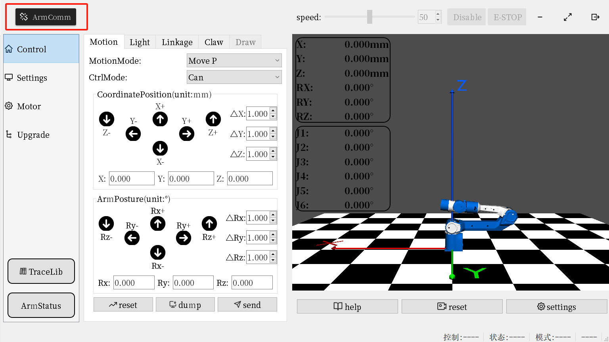
메뉴 · 속도 · Enable · 비상 정지
세로 메뉴: 창 왼쪽의 항목을 누르면 그 항목의 패널로 바뀝니다. 고른 항목은 배경이 하늘색이 됩니다.
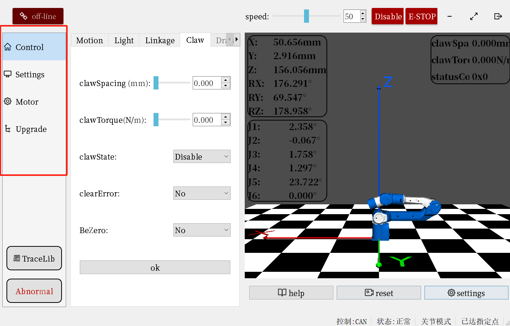
속도 비율: CAN 장치에 연결한 뒤 창 위쪽에서 로봇팔 이동 속도를 정합니다. 값은 로봇팔 최대 속도에 대한 비율입니다.
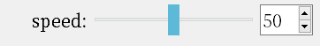
Enable 버튼: 창 위쪽의 버튼은 여섯 관절의 현재 상태를 보여 주며, 누르면 여섯 관절의 상태가 한꺼번에 반대로 바뀝니다.
비상 정지 버튼: 누르면 로봇팔이 모든 움직임을 즉시 멈춥니다. 다시 누르면(Restore) 쓸 수 있으며, Enable한 뒤 다시 움직일 수 있습니다.
창 버튼: 오른쪽 위의 세 버튼은 최소화 · 최대화 · 닫기입니다.
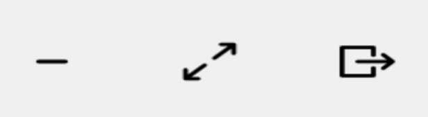
조작 기능 영역
창 가운데가 조작 기능 영역이며, 세로 메뉴에 따라 내용이 바뀝니다. 아래는 관절을 직접 움직이는 동작 제어 영역입니다.
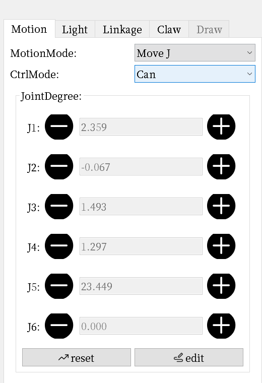
동작 제어
관절은 아래에서 위로 Joint 1 ~ Joint 6이며, 조작 막대의 여섯 관절 설정에 대응합니다. 각도를 직접 넣거나 +/− 버튼으로 관절을 움직입니다 (단위 °).
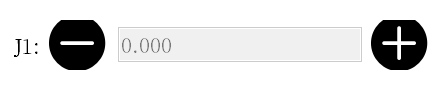
아래 세 버튼은 ① 영점 복귀, ② 불러오기, ③ 보내기입니다. ①은 공장 초기 자세 각도를 보내고, ②는 여섯 관절의 현재 각도를 입력 칸에 채우며, ③은 입력 칸의 여섯 관절 각도를 로봇팔에 보냅니다.
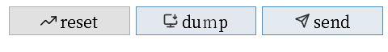
아래는 조명 제어 영역입니다. 관절 조명판이 달려 있으면 여섯 관절의 조명을 제어할 수 있습니다. 위쪽의 관절 번호는 조작할 조명판을, RGB 채널 값은 각 채널의 밝기를 나타내고, 아래 막대는 계산된 실제 색을 보여 줍니다. Confirm을 누르면 조명판에 적용됩니다.
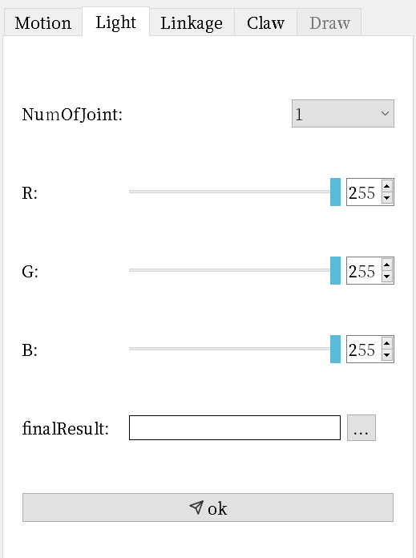
연동 제어 (Linkage)
로봇팔을 단독으로 쓸 때(리더 · 팔로워 텔레오퍼레이션이 아닐 때)는 먼저 Slave 모드로 설정해야 합니다. Master 모드로 되어 있으면 제어할 수 없으니, 호스트 소프트웨어로 Slave 모드로 되돌린 뒤 조작하십시오.
두 팔을 연동하려면 이 화면에서 Master · Servant 상태와 오프셋 값을 정합니다.
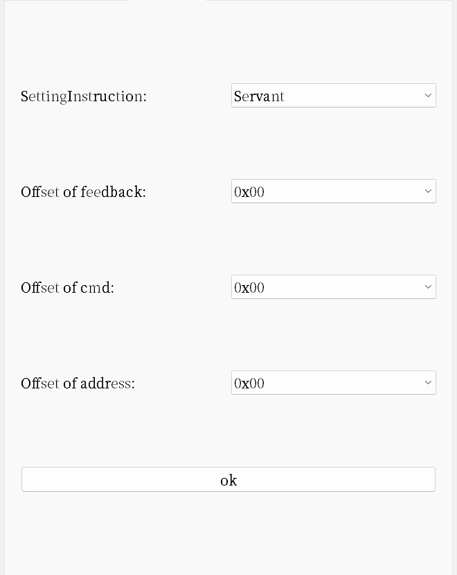
그리퍼 제어 (그리퍼가 있을 때만)
그리퍼의 Enable 상태, 토크 값 등을 정합니다. 오른쪽에 그리퍼 피드백 값이 표시됩니다.
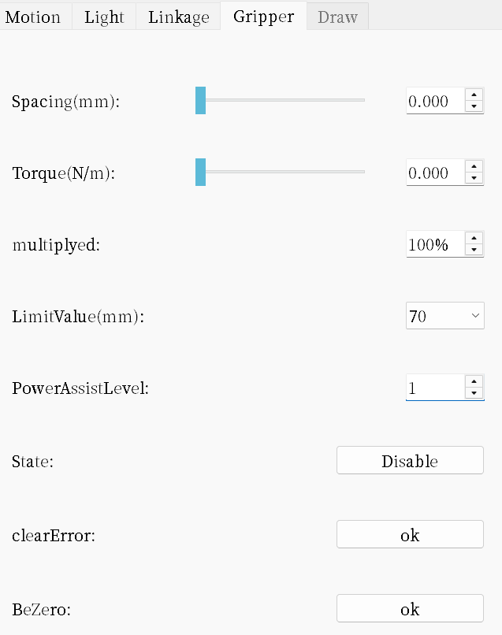
관절 설정
여섯 관절의 최대 · 최소 각도, 최대 속도, 최대 가속도를 정합니다. 순서는 [Edit] → [Save]입니다.
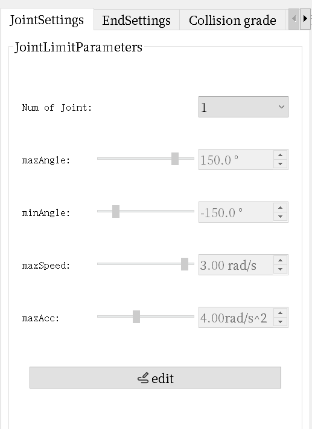
속도 설정
팔 끝의 최대 선속도 · 각속도와 최대 선가속도 · 각가속도를 정합니다. [초기화] 버튼을 누르면 공장 설정으로 돌아갑니다.
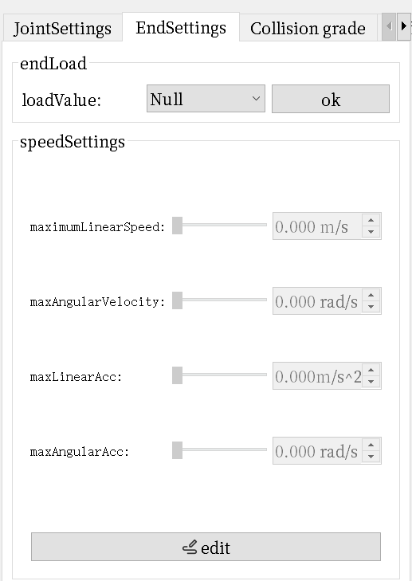
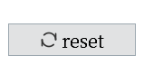
충돌 등급
여섯 관절의 충돌 등급을 1 ~ 8로 정합니다. 순서는 [Edit] → [Save]입니다.
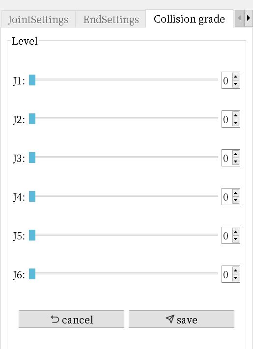
모터 설정
여섯 관절 모터의 상태(Enable · Disable)를 바꾸고, 영점을 설정하고, 오류를 해제합니다.
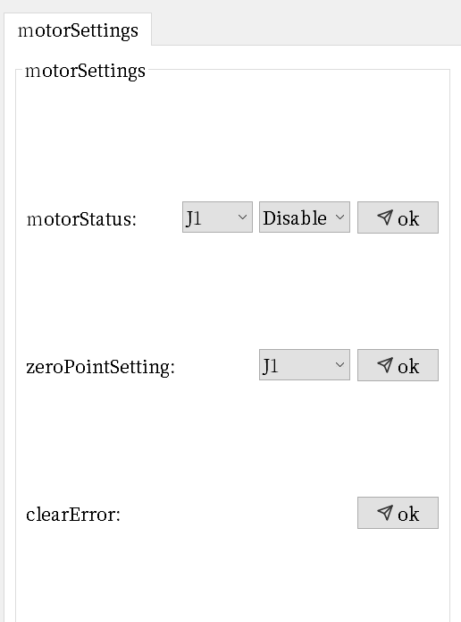
업그레이드
- 정보 표시 영역(1)을 확인합니다.노드 정보 같은 글이 나오면 정상적으로 업그레이드 상태에 들어간 것입니다.
- [Load Software Package](5)를 누릅니다.제공받은 펌웨어(.bin)를 고르면 정보 영역(4)에 펌웨어 정보가 표시됩니다.
- [Start Upgrade](6)를 누르고 진행 막대(2)가 끝날 때까지 기다립니다.보통 2 ~ 3분 걸립니다.
3D 시뮬레이션 모델
창 오른쪽은 로봇팔의 실시간 3D 모델입니다. 왼쪽 위에 현재 좌표와 여섯 관절 각도가 표시됩니다. 아래 세 버튼은 ① 도움말(3D 영역 사용법), ② 시점 복원, ③ 설정(호스트 소프트웨어 파라미터)입니다.
궤적 라이브러리 (TraceLib)
세로 메뉴 아래의 [TraceLib]을 누르면 창이 뜹니다. 이 창에서 로봇팔 동작 궤적을 만들고 편집해 실행할 수 있습니다.
- ① Import: PC의 궤적 라이브러리 로그 파일을 불러옵니다.
- ② Create: 새 동작 궤적을 만듭니다.
- ③ Delete: 고른 궤적을 지웁니다.
- ④ Send: 고른 궤적을 보내 한 번 · 여러 번 · 반복 실행합니다.
- ⑤ Export: 고른 궤적을 PC로 내보냅니다.
궤적을 두 번 누르면 하위 메뉴가 열려 내용을 편집할 수 있고, 마우스 오른쪽 버튼으로 추가 · 삭제 · 수정 · 조회할 수 있습니다.
관절 상태와 로봇팔 상태
창 왼쪽 아래의 관절 상태 버튼을 누르면 [Joint Status] 창이 뜨며 여섯 관절의 상태를 실시간으로 보여 줍니다. 버튼도 관절 상태에 따라 실시간으로 바뀝니다.
창 오른쪽 아래의 상태 표시줄은 로봇팔 상태를 실시간으로 보여 줍니다.
2차 개발과 CAN 프로토콜
Python SDK와 ROS1 · ROS2 드라이버 패키지로 2차 개발을 할 수 있습니다. 자세한 내용은 AgileX GitHub를, 따라 하는 순서는 PiPER 사용 가이드 7 ~ 10장을 보십시오. 문서
| 내용 | 주소 |
|---|---|
| SDK | github.com/agilexrobotics/piper_sdk |
| SDK 데모 | github.com/agilexrobotics/piper_sdk/tree/master/demo |
| SDK UI | github.com/agilexrobotics/Piper_sdk_ui |
| ROS1 Noetic | github.com/agilexrobotics/Piper_ros/tree/ros-noetic-no-aloha |
| ROS2 Humble | github.com/agilexrobotics/Piper_ros/tree/ros-humble-no-aloha |
| URDF | github.com/agilexrobotics/piper_ros/tree/noetic/src/piper_description/urdf |
| MoveIt2 | github.com/agilexrobotics/piper_ros/tree/humble/src/piper_moveit |
| MoveIt | github.com/agilexrobotics/piper_ros/tree/noetic/src/piper_moveit |
| Gazebo | github.com/agilexrobotics/piper_ros/tree/noetic/src/piper_sim/piper_gazebo |
| Isaac Sim | github.com/agilexrobotics/piper_isaac_sim |
CAN 프로토콜
로봇팔에는 개발용 CAN 인터페이스가 있어, 이 인터페이스로 명령을 보내 로봇팔을 제어할 수 있습니다. CAN 통신은 CAN 2.0B 표준을 따르고, 통신 속도는 1000 k이며, 메시지는 MOTOROLA(MSB) 형식입니다. CAN 명령으로 개발하려면 AgileX 기술 지원팀에 CAN 프로토콜 설명서를 요청하십시오.
유지 보수와 비상 대응
로봇팔이 오래 높은 성능을 유지하려면 정기적으로 정비해야 합니다. 모든 정비는 이 설명서의 지시를 엄격히 따라야 합니다. 문서
정비
정비는 로봇팔의 전원을 끄고 영점에 되돌린 뒤 합니다. 전원을 끈 뒤 다음 작업을 합니다.
- 청소: 물티슈나 물에 살짝 적신 천으로 표면의 먼지 · 때 · 기름을 닦습니다.
- 나사 조임: 풀린 나사가 없는지 확인합니다.
- 모터 점검: 모터와 구조 부품에 손상 · 변형이 없는지 봅니다.
- 케이블 점검: 전원 케이블과 CAN 케이블이 단단히 연결되었는지, 피복이 상하지 않았는지 봅니다.
비상 대응
전원 차단
비상 시에는 항공 커넥터를 뽑아 바로 전원을 끊을 수 있습니다.
전원이 꺼지면 로봇팔이 Disable되어 갑자기 떨어질 수 있습니다. 로봇팔과 주변 장비가 손상되거나 사람이 다치지 않게 대비하십시오. 전원을 뽑는 것은 비상 조치일 뿐이며, 부상을 막는 안전장치가 아닙니다.
비상 정지
호스트 소프트웨어에 연결되어 있으면 제어 화면의 일시 정지 버튼으로 로봇팔을 멈추거나 다시 움직일 수 있습니다.
치수 도면
AgileX 사용 설명서의 치수 도면입니다. 단위는 mm입니다. 문서